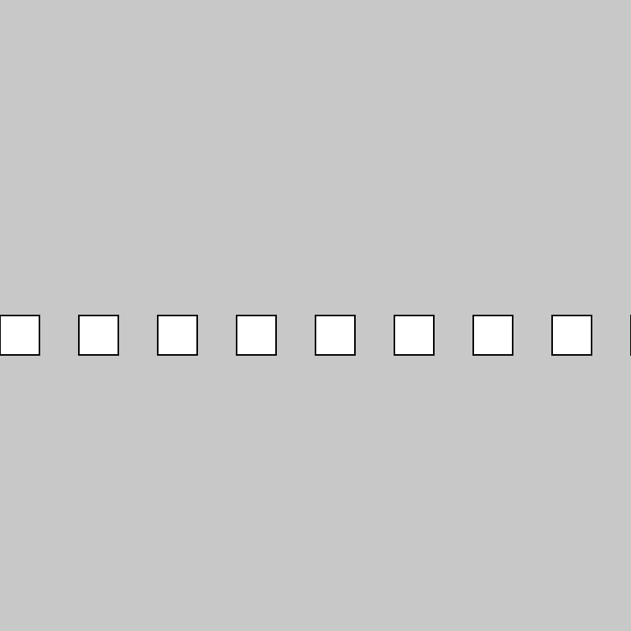
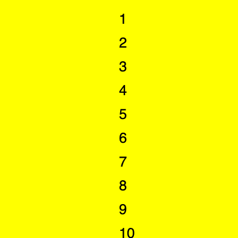
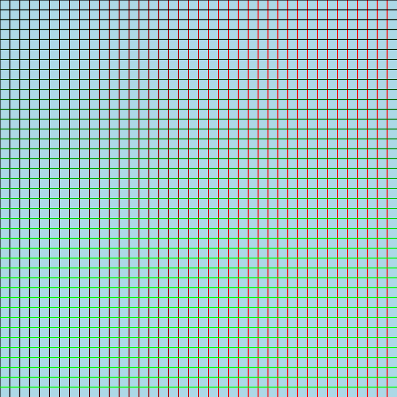

A loop executes code multiple times until a specified condition is met.
Loops make coding more efficient. Instead of manually typing out individual statements by hand, for example, you can write a general form for the statements and have the computer create each one for you.
for() loop
The for() loop is the most commonly used programming loop. The syntax of a for() loop looks like this:
for (initialize; check condition; update) { // code that repeats
}
Ok, so what does that mean?
A for() loop begins with a counting variable, often called i (for "index", at least in my mind). Often we start counting up from 0, so we initialize the counting variable by saying let i = 0;
Next, we tell the loop how high it should count. In other words, when should the loop stop counting? Usually, we indicate this using a comparison operator: if we want to stop counting at 4, for example, we would write i < 4. Each time the loop runs and the counting variable updates, we will check to see if this condition is still true. When i is no longer less than 4, the loop will terminate.
The third element of a for() loop is the counting action itself: how should the code update the value of i each time the loop runs? The most common way of counting is to count up by ones, or to add 1 to i every time the loop runs. To do this, we right code that assigns i a value 1 higher than its previous value: i = i + 1.
Every time the loop runs, it will:
check to see if i satisfies the condition in the second part of the ()
if the condition is met, run the code inside the {}; if the condition is not met, the loop will terminate
update the value of i according to the rule in the third part of the ()
Exercise: describe what running the following code will do:
for (let i = 0; i < 4; i = i + 1) {
console.log(i);
}
i++
When you update the value of the index in a loop, it is common to do this by repeatedly increasing the index variable by a set value. This process is called incrementing and has a couple of coding shorthands. The following three expressions are all equivalent ways of incrementing i by 1:
i = i + 1
i += 1
i++
Practice
Use for() loops to (approximately) recreate the following sketches:
1.

2.

3.

As always, there are many possible correct solutions to each problem. Once you have attemped each problem on your own, you can view sample solutions here.